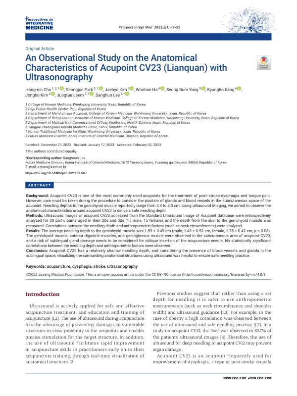

An Observational Study on the Anatomical Characteristics of Acupoint CV23 (Lianquan) with Ultrasonography
Chu H, Park S, Kim J, Ha W, Yang SB, Kang K, Kim J, Leem J, Lee S
Perspectives on Integrative Medicine 2(1):49-55

첫 장 · 오픈액세스First page · open access
논문 소개Summary
염천(CV23)은 뇌졸중 후 삼킴장애와 혀 통증에 자주 쓰는 혈자리인데, 피부밑에 침샘과 혈관이 지나가 시술에 주의가 필요합니다. 이설골근까지의 자침 깊이는 문헌마다 0.4센티미터에서 3.3센티미터로 흩어져 있었습니다. 표준 초음파 영상 데이터베이스에서 20~30대 30명(남녀 각 15명)의 영상을 후향적으로 분석해 안전한 깊이를 구했습니다. 피부에서 이설골근까지는 평균 1.59센티미터였고 남성 1.43센티미터, 여성 1.75센티미터로 차이가 있었습니다. 피부밑에서 이설골근과 앞목뿔근, 턱끝혀근이 관찰되었고 비스듬히 찌를 때는 혀밑샘 손상을 고려해야 했습니다. 목둘레 같은 인체계측 값과 자침 깊이 사이에는 유의한 상관이 없었습니다.
CV23 (Lianquan) is frequently needled for post-stroke dysphagia and tongue pain, but glands and blood vessels run through the subcutaneous space and care is required. Reported needling depths to the geniohyoid muscle were scattered across the literature, from 0.4 to 3.3 cm. This study retrospectively analysed ultrasound images of the CV23 region from 30 participants in their twenties and thirties (15 male, 15 female) held in a standard acupoint ultrasound image database, to derive a safe depth. The mean depth from skin to geniohyoid was 1.59 cm, differing between men at 1.43 cm and women at 1.75 cm. The geniohyoid, anterior digastric and genioglossus muscles were observed beneath the skin, and oblique insertion required consideration of damage to the sublingual gland. No significant correlation was found between needling depth and anthropometric measures such as neck circumference.
인용Cite
Chu H, Park S, Kim J, Ha W, Yang SB, Kang K, Kim J, Leem J, Lee S. An Observational Study on the Anatomical Characteristics of Acupoint CV23 (Lianquan) with Ultrasonography. Perspectives on Integrative Medicine. 2023;2(1):49-55. doi:10.56986/pim.2023.02.007